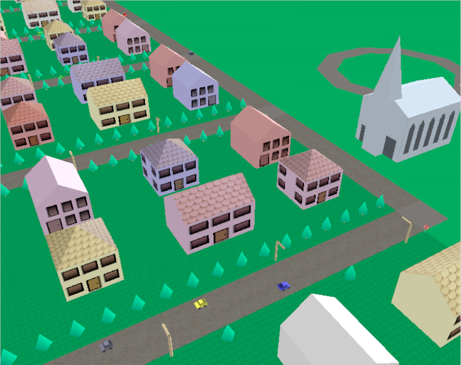

The pedagogical goals of this exercise are to give you practice defining shapes with meshes and adding textures to them.
In the coming weeks, you will make Graphics Town. To start, in this exercise you will make a few kinds of buildings to put into your town. Over the next weeks, you'll make more stuff to go into the town.
For this assignment, you need to make at least two different kinds of buildings. The buildings must have shapes that are more complicated than a box (or other single primitive), and must have textures.
Here is a picture of the old Graphics Town framework (the houses are circa 2000, but they stayed in the assignment up to 2014).

In this picture, you can see three kinds of houses and a church. There are houses that are squarish with a pointy roof (this is called a "pyramid hip" roof), and houses that have two piece roofs (so two of the sides of the building have 5 sides) - these are called "open gable" roofs. (If you want to learn the architectural terms see this page - but this has little to do with graphics). The gable roof houses have two variants: one where the front door is on a 5 sided face, one where the front/back door is on a 4 sided face. These simple buildings are good enough to satisfy the needs of the assignment.
For the requirements, you need to make 2 different building types. The two buildings must have different shapes (so the gable roof houses above are a single shape). The buildings must have doors and windows (or other features), and must use at least one texture. If you need ideas, this page about roofs shows a bunch of different types.
You can choose what kinds of buildings to make. You can make houses, stores, schools, office buildings, castles, forts, igloos, ... (we're open to what qualifies as a "building"). A building must be more than a single primitive shape (so no boxes - even if you want to make a modernist skyscraper).
Remember: be sure to add your textures to the repository so they get pushed to GitHub!
For this assignment, it is legal to load an OBJ (or other file that THREE supports). However, you may not just find a building on web. You must either create the model yourself, or modify something that you found. At least one of your buildings must have a shape that is more than just loading a model from a file (such as defining Geometry in the code, or putting multiple pieces together). If you find a building on the web, you must make your own texture for it. And don't forget to include any geometry files (OBJ) in the repository that gets pushed to GitHub!
If you find a building that has a texture on the web, you will be able to use it in a later assignment. But for this assignment, I want you to try to make things yourself.
Please do not use fancy THREE/WebGL features that we have not yet discussed in class. The only kind of map you can use is a "color map" (the map for a THREE MeshStandardMaterial). You'll get a chance to use fancier kinds of maps soon enough.
This assignment is a good opportunity to get bonus points. You can do this in a number of ways:
You will define your buildings as new classes of objects within the 559 Framework. This way, your buildings will be useful in the future when you make your town. For now, we've given you a simple empty world to place some buildings in. You may need to make the ground plane bigger (this is a parameter to the GrWorld constructor, the camera should adjust appropriately). You will put your buildings into the file 6-1-buildings.js - which will contain your building classes and not much else. We've made a shell program that loads this in: 6-1-buildingdemo.html and 6-1-buildingdemo.js. You will need to use the correct module loading mechanisms to define your classes in 6-1-buildings.js and use them in 6-1-buildingdemo.js - learning these module aspects (import and export) is part of the assignment.
You must also make at least one type of tree/plant as an object type (put it in 6-1-buildings.js). It can be simple (a cylinder and Cone for a pine tree). Or you can do something fancier.
Be sure to put at least one of each kind of object you created into the world so we'll see it when we run 6-1-buildingdemo.html.
And after you've made some buildings for your town, go on to page 7 where you'll make a vehicle.